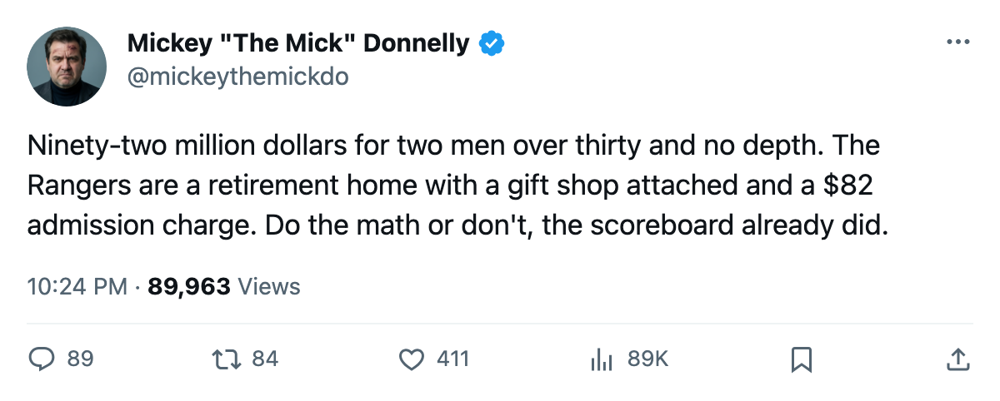
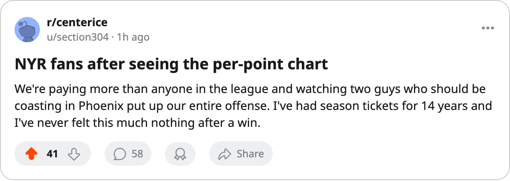

$92.95M. 1-1-1. TWO GUYS OVER 30 CARRYING IT.
The most expensive roster in this league has five points, and the men doing the heavy lifting are 32 and 33 years old.
 Mickey "The Mick" DonnellyColumnist, ex-goalie · The Penalty Box
Mickey "The Mick" DonnellyColumnist, ex-goalie · The Penalty Box
The piece
The most expensive roster in this league has five points.  New York Rangers are paying $92.95M for 1-1-1 through four games, and the two men doing the heavy lifting are
New York Rangers are paying $92.95M for 1-1-1 through four games, and the two men doing the heavy lifting are  Alexei Kovalev82 and
Alexei Kovalev82 and  Petr Nedved80, 32 and 33 years old.
Petr Nedved80, 32 and 33 years old.
Kovalev has five points in four games at 24.8 minutes a night. Nedved has five in four at 25.0. Neither one leads the league's scoring race. Nobody else in a New York sweater is anywhere near the top 30. That's your offense. That's what $92.95M buys you in October.
The  Pittsburgh Penguins model is right in front of them. $48.92M payroll. Six points. $8.15M per point. New York pays $18.59M per point. More than double Pittsburgh's bill for fewer points.
Pittsburgh Penguins model is right in front of them. $48.92M payroll. Six points. $8.15M per point. New York pays $18.59M per point. More than double Pittsburgh's bill for fewer points.
The back end says the same thing. Mike Wilson62, 30, has dropped four points on the Bureau's Development Index, sliding from a 72 base to a 64 overall. The Index doesn't pad. A man at 30 losing four points of form means the body is saying something and the lineup card is nodding along.
Now, the building. 14,195 seats filled at $82 a night. Revenue of $32.53M. Profit of $20.44M. The business works. The hockey product is a 1-1-1 club with two aging forwards and no visible depth behind them.
I've written this column in different cities and with different names for months. You don't win with nostalgia. You win with players who have something to prove. New York has zero Cups and a prestige rating of 526. The payroll says championship. The record says wait your turn.
 Vancouver Canucks pays $46.36M, gets five points, and sits at $9.27M per point with the happiest locker room in hockey at 99.5. Pittsburgh does it for $8.15M a point. Neither of them is spending $92.95M to sit at 1-1-1.
Vancouver Canucks pays $46.36M, gets five points, and sits at $9.27M per point with the happiest locker room in hockey at 99.5. Pittsburgh does it for $8.15M a point. Neither of them is spending $92.95M to sit at 1-1-1.
At $18.59M a point, every dollar is a choice someone made. And someone in that front office chose a 33-year-old left wing over a 23-year-old, a 32-year-old right wing over a kid who can still skate, and a 30-year-old defenseman on the downslide at a 64 overall. The building is full. The profit line looks healthy. The scoreboard has the truth.

